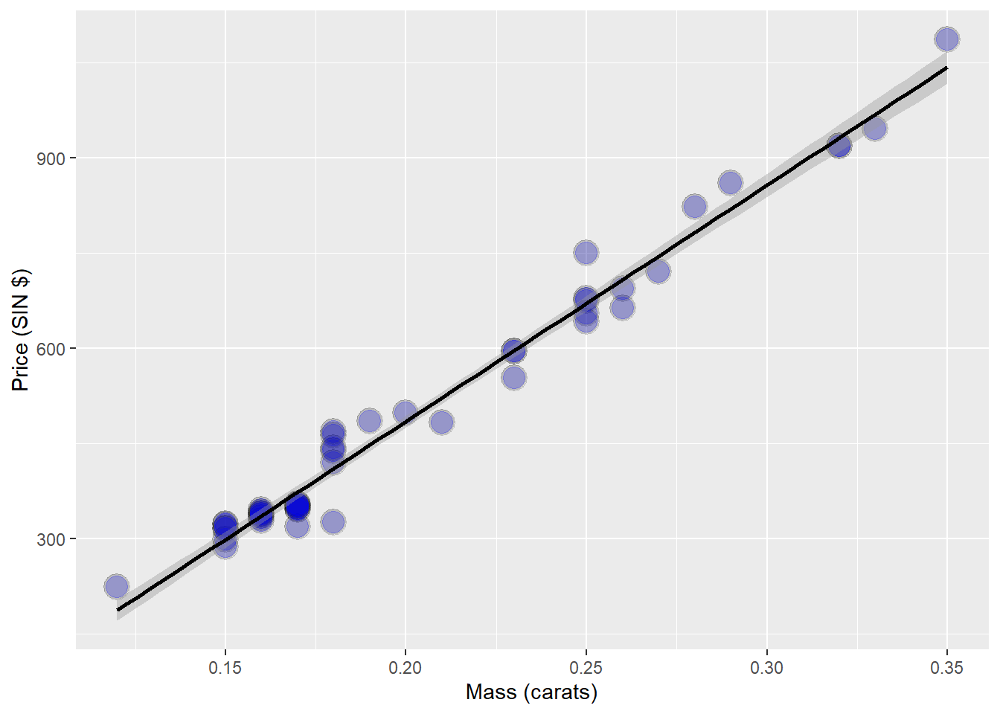
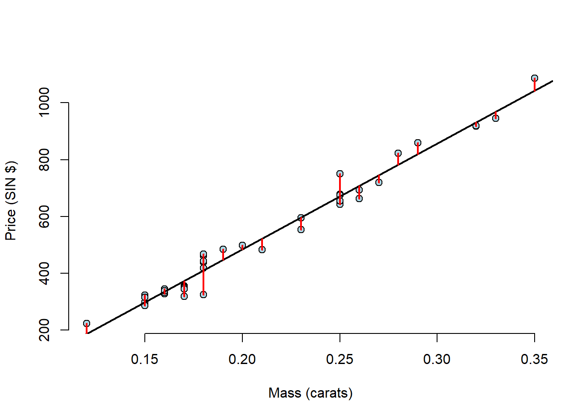
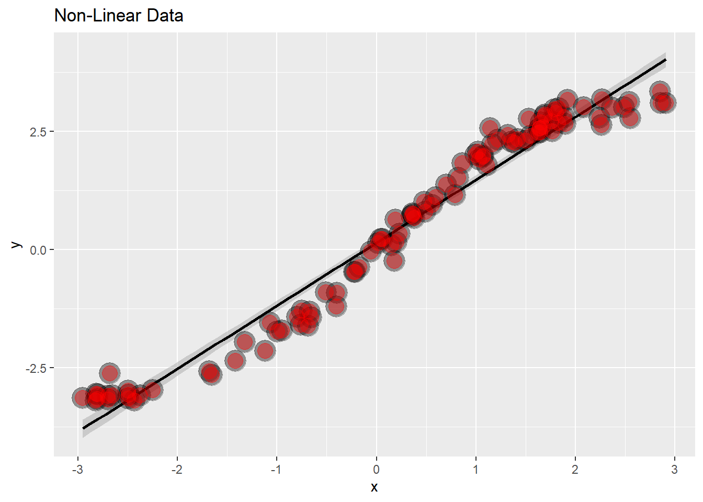
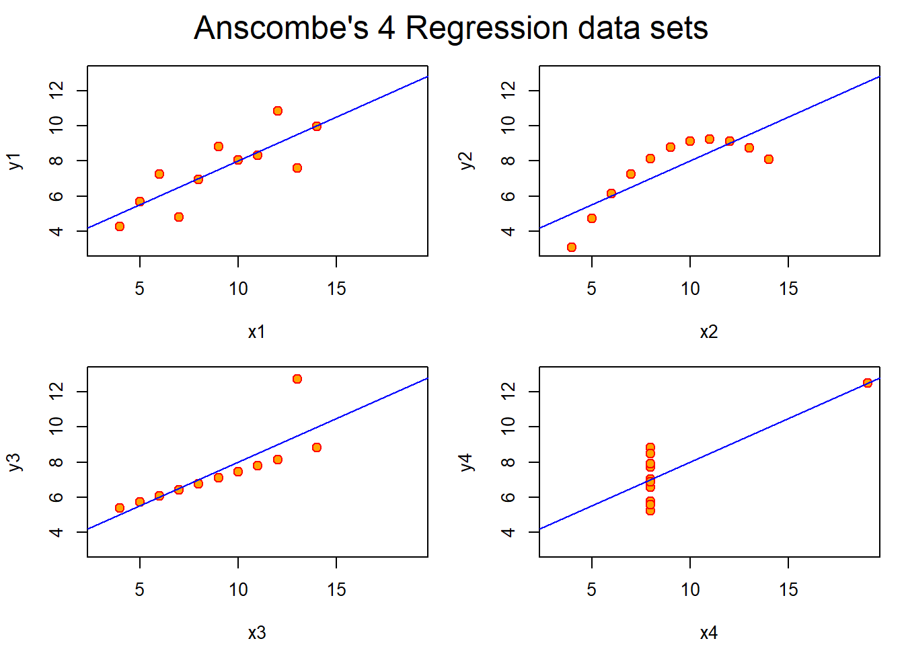

20 Statistical Linear Regression Models
Up to this point, we’ve only considered estimation. Estimation is useful, but we also need to know how to extend our estimates to a population. This is the process of statistical inference. Our approach to statistical inference will be through a statistical model. At the bare minimum, we need a few distributional assumptions on the errors. However, we’ll focus on full model assumptions under Gaussianity.
20.1 Basic Regression Model with Additive Gaussian Errors
We would like to generalise to a population, using our data and some statistical analysis.
- Least squares is an estimation tool, how do we inference?
- Consider developing a probabalistic model for linear regression.
\[Y_i = \beta_0 + \beta_1 X_i + \epsilon_i\]
- Here the independant gaussian errors \(\epsilon_i\) are assumed to be normally distributed \(N(0, \sigma^2)\)
- Note, \(E[Y_i | X_i = x_i] = \mu_i = \beta_0 + \beta_1 x_i\)
- Note, \(Var(Y_i|X_i = x_i) = \sigma^2\)
20.2 Interpreting Coefficients
Now that we have a formal statistical framework, we can interpret our regression coefficients with respect to that framework.
\(\beta_1\) is the expected change in response for a 1 unit change in the predictor. \[E[Y | X = x +1] - E[Y | X = x] = \beta_0 + \beta_1(x+1) - (\beta_0 + \beta_1 x) = \beta_1\]
20.3 Linear Regression for Prediction
data(diamond)
g <- ggplot(diamond, aes( x = carat, y = price))+
xlab("Mass (carats)") +
ylab("Price (SIN $)") +
geom_point(size = 6, colour = "black", alpha = 0.2) +
geom_point(size = 5, colour = "blue", alpha = 0.2) +
geom_smooth(method = "lm", colour = "black")
g## `geom_smooth()` using formula 'y ~ x'
20.3.1 Fitting the Linear Regression Model
## (Intercept) carat
## -259.6259 3721.0249##
## Call:
## lm(formula = price ~ carat, data = diamond)
##
## Residuals:
## Min 1Q Median 3Q Max
## -85.159 -21.448 -0.869 18.972 79.370
##
## Coefficients:
## Estimate Std. Error t value Pr(>|t|)
## (Intercept) -259.63 17.32 -14.99 <2e-16 ***
## carat 3721.02 81.79 45.50 <2e-16 ***
## ---
## Signif. codes: 0 '***' 0.001 '**' 0.01 '*' 0.05 '.' 0.1 ' ' 1
##
## Residual standard error: 31.84 on 46 degrees of freedom
## Multiple R-squared: 0.9783, Adjusted R-squared: 0.9778
## F-statistic: 2070 on 1 and 46 DF, p-value: < 2.2e-16- We therefore estimate an expected 3721.02 (SIN $) for every carat increase in mass of diamond.
20.3.2 Getting a More Interpretable Result
Here, we’ll mean-centre our predictor variable, carat.
## (Intercept) I(carat - mean(carat))
## 500.0833 3721.0249Here we can see that the slope \(\beta_1\)is the same as before, only the intercept \(\beta_0\) is different. We can interpret this result as The expected price for the average sized diamond (0.2042 carats) from our data is $500.1 SIN
What if we waned to know what the price increase would be from a 1/10 increase in carat? A 1 carat increase in mass is fairly large.
## (Intercept) I(carat * 10)
## -259.6259 372.102520.3.3 Predicting the Price of a Diamond
# New mass of diamond we want to predict
newx <- c(0.16, 0.27, 0.34)
# Following the form of our regression equation we can just insert the new diamond data to predict their price using the regression model we fit on our previous data
coef(fit)[1] + coef(fit)[2] * newx## [1] 335.7381 745.0508 1005.5225# This can also be done with the `predict` function
predict(fit, newdata = data.frame(carat = newx))## 1 2 3
## 335.7381 745.0508 1005.522520.4 Residuals and Residual Variation
Residuals represent variation left unexplained by our model. We emphasize the difference between residuals and errors. The errors unobservable true errors from the known coefficients, while residuals are the observable errors from the estimated coefficients. In a sense, the residuals are estimates of the errors.
20.4.1 Motivating example
diamond data set from the UsingR package. Data is diamond prices (Singapore Dollars) and diamond weight in carats.
data(diamond)
g <- ggplot(diamond, aes( x = carat, y = price))+
xlab("Mass (carats)") +
ylab("Price (SIN $)") +
geom_point(size = 6, colour = "black", alpha = 0.2) +
geom_point(size = 5, colour = "blue", alpha = 0.2) +
geom_smooth(method = "lm", colour = "black")
g## `geom_smooth()` using formula 'y ~ x'- Our model is \(Y_i = \beta_0 + \beta_1 X_i + \epsilon_i ~ N(0, \sigma^2)\)
- Observed outcome \(i\) is \(Y_i\) at predictor value \(X_i\).
- Residual, between the observed and predicted outcome \(e_i = Y_i - \hat{Y_i}\).
- The vertical distance between the observed data point and the regression line.
- The \(e_i\) can be thought of as estimates of the \(\epsilon_i\).
20.4.2 Properties of the Residuals
- \(E[e_i] = 0\)
- If an intercept is included, \(\sum_{i=1}^n e_i = 0\)
- If a regressor variable, \(X_i\) is included in the model \(\sum_{i=1}^n e_i X_i =0\)
- Residuals are useful for investigating poor model fit.
- Positive residuals are above the line, negative residuals are below.
- Residuals can be thought of as the outcome \((Y)\) with the linear association of the predictor \((X)\) removed.
# Load diamond data from UsingR package
data(diamond)
# Set variables are price and diamond mass
y <- diamond$price
x<- diamond$carat
n <- length(y)
# Create the linear model with the lm() function
fit <- lm(y ~ x)
# Calculate the residuals from the linear model with the resid() function
e <- resid(fit)
# Calculate the predicted values (yhat) using the predict function
yhat <- predict(fit)
max(abs(e - (y - yhat)))## [1] 9.485746e-13## [1] 9.485746e-13## [1] -1.865175e-14## [1] 6.959711e-15# Lets plot the residuals on the standard linear plot
plot(diamond$carat, diamond$price,
xlab = "Mass (carats)",
ylab = "Price (SIN $)",
bg = "lightblue",
col = "black", cex = 1.1, pch = 21, frame = FALSE)
abline(fit, lwd = 2)
for (i in 1:n)
lines(c(x[i], x[i]), c(y[i], yhat[i]), col = "red", lwd = 2) This makes it quite hard to see the residuals as there is so much empty space on the plot, so this time, lets plot the residuals and the mass of the diamonds.
plot(x, e,
xlab = "Mass (carats)",
ylab = "Residuals (SIN $)",
bg = "lightblue",
col = "black", cex = 2, pch = 21, frame = FALSE)
abline(h = 0, lwd = 2)
for (i in 1:n)
lines(c(x[i], x[i]), c(e[i], 0), col = "red" ,lwd = 2)This plot makes it much easier to see the residual variation. With a plot like this, you must look for any pattern. The residuals should be patternless. Something we can see here for example, is that there have been many diamonds of the same mass measured. This information tends to get lost in the scatter plots.
20.4.3 Non Linear Data
# Create some non-linear data
x = runif(100, -3, 3)
y = x + sin(x) + rnorm(100, sd = .2)
# Graph it
g <- ggplot(data.frame(x = x, y = y), aes(x = x, y = y)) +
geom_smooth(method = "lm", colour = "black") +
geom_point(size = 7, colour = "black", alpha = 0.4) +
geom_point(size = 5, colour = "red", alpha = 0.4) +
ggtitle("Non-Linear Data")
g## `geom_smooth()` using formula 'y ~ x'
# Let's now make a plot of the Residuals vs the Mass
g <- ggplot(data.frame(x = x, y = resid(lm(y ~ x))), aes(x = x, y = y)) +
geom_smooth(method = "lm", colour = "black") +
geom_point(size = 7, colour = "black", alpha = 0.4) +
geom_point(size = 5, colour = "red", alpha = 0.4) +
ylab("Residual") +
ggtitle("Non-Linear Data Residual Plot")
g## `geom_smooth()` using formula 'y ~ x'This is now super obvious that the data isn’t linear, the sine wave becomes evident.
20.4.4 Heteroskedasticity
# Make some data with constantly increasing variance
x <- runif(100, 0, 6)
y <- x + rnorm(100, mean = 0, sd = .001 * x)
g <- ggplot(data.frame(x = x, y = y), aes(x = x, y = y)) +
geom_smooth(method = "lm", colour = "black") +
geom_point(size = 7, colour = "black", alpha = 0.4) +
geom_point(size = 5, colour = "red", alpha = 0.4) +
ggtitle("Heteroskedastic data plot")
g## `geom_smooth()` using formula 'y ~ x'This looks like the data falls perfectly on the line right? Great linear model? Lets look at the residuals and find out…
g <- ggplot(data.frame(x = x, y = resid(lm(y ~ x))), aes(x = x, y = y)) +
geom_smooth(method = "lm", colour = "black") +
geom_point(size = 7, colour = "black", alpha = 0.4) +
geom_point(size = 5, colour = "red", alpha = 0.4) +
ggtitle("Heteroskedastic data plot")
g## `geom_smooth()` using formula 'y ~ x'However, looking at the residuals, the variance is not constant throughout, this is evidence of our data not being linearly related. Residual plots are great at highlighing this.
Lets look again at the diamond residual data for any trends that we may have missed.
diamond$e <- resid(lm(price ~ carat, data = diamond))
g <- ggplot(diamond, aes(x = carat, y = e)) +
xlab("Mass") +
ylab("Price") +
geom_hline(yintercept = 0, size = 2) +
geom_point(size = 7, colour = "black", alpha = 0.5) +
geom_point(siz = 5, colour = "blue", alpha = 0.2) +
ggtitle("Diamond Residual Plot")## Warning: Ignoring unknown parameters: sizThis seems like a really god fit, the residuals are seemingly randomly distributed.
# create two residual vectors, one fits deviation around price, and one that uses the diamond mass as a predictor variable (variation around the regression line)
e =c(resid(lm(price ~ 1, data = diamond)),
resid(lm(price ~ carat, data = diamond)))
# create a factor variable that labels the set of residuals
fit = factor(c(rep("Intercept only", nrow(diamond)),
rep("Itercept and slope", nrow(diamond))))
g <- ggplot(data.frame(e = e, fit = fit), aes( y = e, x = fit, fill = fit)) +
geom_dotplot(binaxis = "y", size = 2, stackdir = "center") +
xlab("Fitting approach") +
ylab("Residual Price")## Warning: Ignoring unknown parameters: size## `stat_bindot()` using `bins = 30`. Pick better value with `binwidth`.20.5 Estimating Residual Variation
Residual variation is variation around the regression line.
- Model \(Y_i = \beta_0, \beta_1 X_i + \epsilon_i\) where \(\epsilon_i ~ N(0, \sigma^2)\).
- The ML estimate of \(\sigma^2\) is \({1 \over n} \sum_{i=1}^n e_i^2\), the average residual.
- Most people use \(\hat{\sigma^2}={1 \over n-2} \sum_{i=1}^n e_i^2\).
- The \(n-2\) instead of \(n\) is so that \(E[\hat{\sigma^2}] = \sigma^2\)
Lets look at how to grab the residual variation out of our lm fit:
## [1] 31.84052## [1] 31.8405220.6 R Squared
R Squared is the percentage of the total variability that is explained by the linear relationship with the predictor. \[R^2 = {{\sum_{i=1}^n (\hat{Y_i} - \bar{Y})^2}\over{\sum_{i=1}^n (Y_i - \bar{Y}})^2}\] Where:
- \(\sum_{i=1}^n (\hat{Y_i} - \bar{Y})^2\) is the regression variation
- \(\sum_{i=1}^n (Y_i - \bar{Y})^2\) is the total variation
\(R^2\) is the percentage of variation explained by the regression model. (Also the correlation squared) This metric cannot tell you if the it is right or not, it does not replace a simple scatter plot and must only be applied in the correct way, for example deleting data can inflate \(R^2\).
20.6.1 Example:
##
## anscmb> require(stats); require(graphics)
##
## anscmb> summary(anscombe)
## x1 x2 x3 x4 y1
## Min. : 4.0 Min. : 4.0 Min. : 4.0 Min. : 8 Min. : 4.260
## 1st Qu.: 6.5 1st Qu.: 6.5 1st Qu.: 6.5 1st Qu.: 8 1st Qu.: 6.315
## Median : 9.0 Median : 9.0 Median : 9.0 Median : 8 Median : 7.580
## Mean : 9.0 Mean : 9.0 Mean : 9.0 Mean : 9 Mean : 7.501
## 3rd Qu.:11.5 3rd Qu.:11.5 3rd Qu.:11.5 3rd Qu.: 8 3rd Qu.: 8.570
## Max. :14.0 Max. :14.0 Max. :14.0 Max. :19 Max. :10.840
## y2 y3 y4
## Min. :3.100 Min. : 5.39 Min. : 5.250
## 1st Qu.:6.695 1st Qu.: 6.25 1st Qu.: 6.170
## Median :8.140 Median : 7.11 Median : 7.040
## Mean :7.501 Mean : 7.50 Mean : 7.501
## 3rd Qu.:8.950 3rd Qu.: 7.98 3rd Qu.: 8.190
## Max. :9.260 Max. :12.74 Max. :12.500
##
## anscmb> ##-- now some "magic" to do the 4 regressions in a loop:
## anscmb> ff <- y ~ x
##
## anscmb> mods <- setNames(as.list(1:4), paste0("lm", 1:4))
##
## anscmb> for(i in 1:4) {
## anscmb+ ff[2:3] <- lapply(paste0(c("y","x"), i), as.name)
## anscmb+ ## or ff[[2]] <- as.name(paste0("y", i))
## anscmb+ ## ff[[3]] <- as.name(paste0("x", i))
## anscmb+ mods[[i]] <- lmi <- lm(ff, data = anscombe)
## anscmb+ print(anova(lmi))
## anscmb+ }
## Analysis of Variance Table
##
## Response: y1
## Df Sum Sq Mean Sq F value Pr(>F)
## x1 1 27.510 27.5100 17.99 0.00217 **
## Residuals 9 13.763 1.5292
## ---
## Signif. codes: 0 '***' 0.001 '**' 0.01 '*' 0.05 '.' 0.1 ' ' 1
## Analysis of Variance Table
##
## Response: y2
## Df Sum Sq Mean Sq F value Pr(>F)
## x2 1 27.500 27.5000 17.966 0.002179 **
## Residuals 9 13.776 1.5307
## ---
## Signif. codes: 0 '***' 0.001 '**' 0.01 '*' 0.05 '.' 0.1 ' ' 1
## Analysis of Variance Table
##
## Response: y3
## Df Sum Sq Mean Sq F value Pr(>F)
## x3 1 27.470 27.4700 17.972 0.002176 **
## Residuals 9 13.756 1.5285
## ---
## Signif. codes: 0 '***' 0.001 '**' 0.01 '*' 0.05 '.' 0.1 ' ' 1
## Analysis of Variance Table
##
## Response: y4
## Df Sum Sq Mean Sq F value Pr(>F)
## x4 1 27.490 27.4900 18.003 0.002165 **
## Residuals 9 13.742 1.5269
## ---
## Signif. codes: 0 '***' 0.001 '**' 0.01 '*' 0.05 '.' 0.1 ' ' 1
##
## anscmb> ## See how close they are (numerically!)
## anscmb> sapply(mods, coef)
## lm1 lm2 lm3 lm4
## (Intercept) 3.0000909 3.000909 3.0024545 3.0017273
## x1 0.5000909 0.500000 0.4997273 0.4999091
##
## anscmb> lapply(mods, function(fm) coef(summary(fm)))
## $lm1
## Estimate Std. Error t value Pr(>|t|)
## (Intercept) 3.0000909 1.1247468 2.667348 0.025734051
## x1 0.5000909 0.1179055 4.241455 0.002169629
##
## $lm2
## Estimate Std. Error t value Pr(>|t|)
## (Intercept) 3.000909 1.1253024 2.666758 0.025758941
## x2 0.500000 0.1179637 4.238590 0.002178816
##
## $lm3
## Estimate Std. Error t value Pr(>|t|)
## (Intercept) 3.0024545 1.1244812 2.670080 0.025619109
## x3 0.4997273 0.1178777 4.239372 0.002176305
##
## $lm4
## Estimate Std. Error t value Pr(>|t|)
## (Intercept) 3.0017273 1.1239211 2.670763 0.025590425
## x4 0.4999091 0.1178189 4.243028 0.002164602
##
##
## anscmb> ## Now, do what you should have done in the first place: PLOTS
## anscmb> op <- par(mfrow = c(2, 2), mar = 0.1+c(4,4,1,1), oma = c(0, 0, 2, 0))
##
## anscmb> for(i in 1:4) {
## anscmb+ ff[2:3] <- lapply(paste0(c("y","x"), i), as.name)
## anscmb+ plot(ff, data = anscombe, col = "red", pch = 21, bg = "orange", cex = 1.2,
## anscmb+ xlim = c(3, 19), ylim = c(3, 13))
## anscmb+ abline(mods[[i]], col = "blue")
## anscmb+ }
##
## anscmb> mtext("Anscombe's 4 Regression data sets", outer = TRUE, cex = 1.5)
##
## anscmb> par(op)All of the following plots have identical \(R^2\) values.
- The first plot is a fairly good linear plot, albeit with a lot of noise.
- The second plot clearly shows that there is a missing term to address the curvature.
- The third plot has an obvious outlier that need addressing.
- The fourth plot has all of the data in one place with a single data point placed far off in the distance.
20.7 Inference in Regression
Inference is the process of drawing conclusions about a population using a sample. In statistical inference, we must account for the uncertainty in our estimates in a principled way. Hypothesis tests and confidence intervals are among the most common forms of statistical inference.
- We assume that the true model is known.
- The model: \[Y_i = \beta_0, \beta_1 X_i + \epsilon_i\] where \(\epsilon_i ~ N(0, \sigma^2)\).
- The intercept: \[\hat{\beta_0} = \bar{Y} - \hat{\beta_1} \bar{X}\]
- The slope: \[\hat{\beta_1} = Cor(Y,X){{Sd(Y)}\over{Sd(X)}}\]
Statistics like \({\hat{\theta} - \theta}\over{\hat{\sigma_{\hat{\theta}}}}\) generally have the following properties:
- They’re normally distributed
- Can be used to create hypothesis tests such as \(H_0: \theta = \theta_0\) versus \(H_A: \theta >, <, \ne \theta_0\)
- Can be used to make conidence intervals for \(\theta\) via the estimate plus or minus the relevant quantile multipled by the standard error \(\hat{\theta} \pm Q_{1- \alpha/2} \hat{\sigma_{\hat{\theta}}}\)
- where \(\hat{\theta}\) is the estimate.
- \(Q_{1- \alpha/2}\) is the relevent quantile from either a normal or T distribution. The alpha here depends on what you choose it to be, normally its 0.05.
- \(\hat{\sigma_{\hat{\theta}}}\) is the standard error.
- In the case of regression with iid sampling and normal errors, our inferences will follow very similarly to what you saw in your inference class.
The variance of our regression slope is a highly informative formula:
\[\sigma_{\hat{\beta_1}}^2 = Var(\hat{\beta_1}) = \sigma^2 / \sum_{i=1}^n (X_i - \bar{X})^2\] The variation around the slope (standard error) relies on two things:
- How variable the points are around the true regression line \(\sigma^2\)
- How variable the \(X\)s are.
The variance of the intercept
\[\sigma_{\hat{\beta_0}}^2 = Var(\hat{\beta_0}) = ({1 \over n} + {{\bar{X^2}}\over{\sum_{i=1}^n (X_i - \bar{X})^2}}) \sigma^2\]
- In practice, \(\sigma\) is replaced by its logical estimate (the sum of squared residuals).
\[{\hat{\beta_j}- \beta_j}\over{\sigma_{\hat{\beta_j}}}\]
- Our slope or intercept estimate minus the true value divided by their standard error follows a T-distribution with \(n-2\) degrees of freedom.
- This can be usde to make confidence intervals and hypothesis tests.
20.7.1 Hand-rolling the linear regression function
# create variables using diamond data set
y <- diamond$price
x <- diamond$carat
n <- length(y)
# create regression coefficients
beta1 <- cor(y,x) * sd(y)/sd(x)
beta0 <- mean(y) - beta1 * mean(x)
# Find residuals (response - predicted values)
e <- y - beta0 - beta1 * x
# Find estimate for the variability around the regression line
sigma <- sqrt(sum(e^2) / (n-2))
# Find the sums of the squares fo the Xs (variation in X)
ssx <- sum((x - mean(x))^2)
# Find standard error in regression coefficients
seBeta0 <- (1/n + mean(x)^2 / ssx)^.5 *sigma
seBeta1 <- sigma / sqrt(ssx)
# Find t statistics for both regression coeffients
tBeta0 <- beta0 / seBeta0
tBeta1 <- beta1 / seBeta1
# Find p value for regression coefficients
pBeta0 <- 2 * pt(abs(tBeta0), df = n - 2, lower.tail = FALSE)
pBeta1 <- 2 * pt(abs(tBeta1), df = n - 2, lower.tail = FALSE)
coefTable <- rbind(c(beta0, seBeta0, tBeta0, pBeta0), c(beta1, seBeta1, tBeta1, pBeta1))
colnames(coefTable) <- c("Estimate", "Std. Error", "t-Value", "P(>|t|)")
rownames(coefTable) <- c("Intercept", "x")
coefTable## Estimate Std. Error t-Value P(>|t|)
## Intercept -259.6259 17.31886 -14.99094 2.523271e-19
## x 3721.0249 81.78588 45.49715 6.751260e-40This output should (if done correctly) give you the exact same as the output from a linear model created using the lm() function with two lines of code.
Lets find out:
## Estimate Std. Error t value Pr(>|t|)
## (Intercept) -259.6259 17.31886 -14.99094 2.523271e-19
## x 3721.0249 81.78588 45.49715 6.751260e-4020.7.2 Getting a Confidence Interval
Typing summary(fit) gies you the full output form the lm() function.
sumCoef <- summary(fit)$coefficients
IntEst <- sumCoef[1,1] + c(-1,1) * qt(0.975, df = fit$df) * sumCoef[1,2]
SlopeEst<- (sumCoef[2,1] + c(-1,1) * qt(0.975, df = fit$df) * sumCoef[2,2])/ 10
IntEst## [1] -294.4870 -224.7649## [1] 355.6398 388.5651This effectively tells us that for every 0.1 carat increat in diamond mass, we are 95% confident that the price increase in singapore dollars will be between $356 and $389.